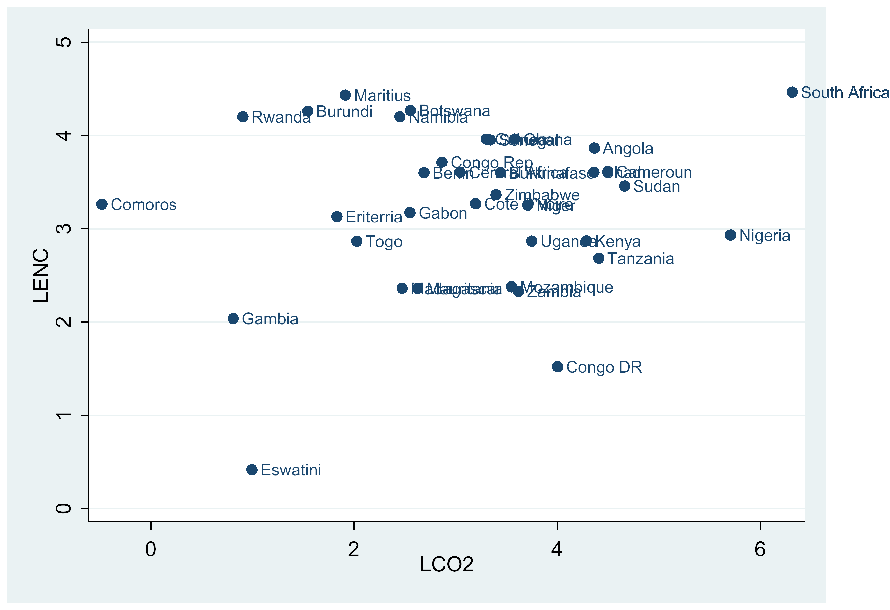

Variables and Definitions | Description |
|---|---|
EQ - Environmental Quality | Captured with carbon emissions (CO2) measured in |
RGDP - Real Gross Domestic Product | Captured with GDP (US$ Billion 2015 constant) |
ENC - Energy use | Captured with fossil fuel energy consumed per capita (EN) |
GCI - Gross Capital Investment | Proxied with gross capital formation |
TOP - Trade Openness | Captured with trade in % of GDP |
REQ - Regulatory Quality | Captured with quality of regulations (in Percentile Rank) |
ENC*TOP | Captured with multiplication energy consumption and trade openness |
* EQ decreases as CO2 increases | |
Source: EQ, RGDP, ENC, GCI and TOP - World Development Indicator (WDI, 2022) | |
REQ - World Government Indicator (WGI, 2022), ENC*TOP - Derived | |

Assessing the role of Trade on the Nexus between Environmental Quality and Energy Use: Evidence from Sub-Saharan Africa
Working Paper
Abstract
In spite of the overwhelming evidence linking the energy use and environmental quality, the part played by international trade in the relationship has not been thoroughly studied, particularly in Sub-Saharan Africa. This study, which includes 35 selected economies in Sub-Saharan Africa divided into 20 low-income countries (LICs) and 15 middle-income countries (MICs), examines the moderating influence of trade on the nexus between energy use and environmental quality between 1996 and 2020. In this regard, the cross-sectional augmented autoregressive distributed lag (CS-ARDL) along with pooled mean group (PMG) estimator was employed. The results showed that, especially in MICs, energy use has an unfavorable consequence on the quality of the environment. It also demonstrated that trade’s effectiveness considerably reduces the damaging effects of energy use on the environment. We suggest that the newly signed and ratified African Continental Free Trade Agreement (AfCFTA) outline a number of ways that State Parties are required to deepen the links between the AfCFTA and the environment, with an emphasis on practical strategies and tactics.
JEL Classifications: Q43, F13, C23, Q58
Keywords: Energy Use, Environmental Quality, trade, CS_ARDL, AfCFTA
1 Introduction
One of the most significant issues facing both developing and industrialized nations worldwide is the continuous growth of excessive environmental hazards, particularly climate change. As the state of the earth continues to deteriorate, governments, international organizations, corporate groups, and academia appear to have all begun to pay attention to this growing crisis. Akadiri et al. (2019) claim that emissions of \(CO_2\) are to blame for this damage. This shows that increased \(CO_2\) emissions from energy consumption are substantially to blame for the degradation of the ecosystem. Similarly, economic activities are typically to blame for high levels of carbon emissions, according to Eregha & Mesagan (2017). The type and quantity of products and services an economy creates and consumes determine its rate of growth. To make a living, there is always a tendency to produce and market. The standard of living is heavily influenced by the commodities and services that are made available to the populace in society at large. Growth also has a development component that makes equal distribution feasible. In order to do this, products must be transported around the globe. To improve the quality of living, production, particularly in the manufacturing sector, is exported from one nation to another. The majority of the commodities and services imported by developing countries come from the industrialized countries. As a result, Sub-Saharan Africa (SSA) has witnessed an unprecedented increase in the tendency of importing both new and second-hand goods from these countries since the late 1980s, partly for consumption and industrial uptake.
Asserting a link between economic activity and environmental quality are Mesagan & Olunkwa (2020), Ahmad & Du (2017), Padhan et al. (2019), Kahia et al. (2019), and Ahmad & Du (2019). This implies that attempts to promote economic growth, particularly through industrial and manufacturing activities, are linked to an increase in energy consumption, which fuels carbon emissions, which in turn degrades environmental quality. The reason for this is that SSA economies are largely dependent on technologies that use energy sources like coal, gas, and fossil fuels, which are perceived to be less expensive to consume yet with high negative environmental effects, in their efforts to promote economic expansion. The primary objective is to boost economic activity profit. This reasoning is in line with the first-order condition of the Kuznet Curve (EKC) of environment, which holds that as the economy expands, carbon emissions increase and have a detrimental effect on the environment. Unfortunately, the majority of the world’s economies, especially the SSA, are not affluent enough to use less carbon-emitting (energy-efficient) technologies to drive their necessary expansion.
In a similar vein, Salahuddin and Gow (2019) offered an alternative line of thought, claiming that there is no evidence to link the quality of the environment with economic growth, either directly or indirectly. is insufficient to support environmental policies aimed to lessen harmful emissions and improve environmental quality. More specifically, it’s crucial to understand how environmental quality and economic development are related. According to Abdouli and Hammami (2017), there is evidence for both a one-way causal link between environmental quality and growth, on one hand, and a causative flow in the other direction, on the other hand, with growth driving environmental change. According to the research, increased economic activity—including production, distribution, and trade—degrades the quality of the environment because it causes biodiversity loss, deforestation for the creation of industries and manufacturing facilities, and carbon emissions from the use of heavy energy. Likewise, the findings of Danish and Wang (2018), Saud et al. (2019), and Akadiri et al. (2019)—which found a reciprocal connection between the quality of the environment and economic performance—do not support the former. This shows that while economic success is constrained by environmental quality, environmental vulnerability is increased by economic performance. This illustrates how tighter environmental controls designed to enhance environmental quality can restrict industrial/manufacturing activities, which consequently slows economic growth.
Meanwhile, SSA countries, which are solely grouped into middle-income and low-income economies, are currently experiencing influx of all sorts of imports due to globalization. For instance, products like auto tailpipes, used electrical and electronics equipment (UEEE) and used clothing, which cost tens of billions of dollars, which release harmful pollutants and heat-trapping gases, are prevalent across the SSA countries (Abubakar et al. (2018); Agbo, 2018). As latent demand for industrial technologies and consumer products like cars are stimulated across the developing economies, a significant amount of outdated, used, and on the verge of being discarded goods are making their way to low- and middle-income country marketplaces, especially in the SSA. In national policies for air pollution management and climate mitigation, the issue of this constant flow of discards, old, worn, and inexpensive commodities/technologies from high-income economies to low and middle-income economies of Africa, is still not adequately addressed. As a result, there is a significant buildup of carbon emitting (energy-inefficient) technologies as well as secondhand goods in these countries without enough funds to deal with concerns like air pollution, climate change, or other environmental problems. Furthermore, economic limitations in these countries such as low consumer affordability, the appeal of cheap technologies/goods, and lax emissions controls have created the conditions and incentives for these unhealthy influx and uncontrolled dumping. The empirical results show that it may be difficult to predict how international trade has induced energy consumption with its attendant effects on the climate in SSA. Additionally, given that trade in manufactured goods is a part of ecosystems and some anti-globalization activists contend that increased global trade is fundamentally detrimental to the environment, it is possible to conclude that this practice is even more harmful (Krugman et al., 2013). It is clear that trade in manufactured goods has a considerable influence on the quality of the environment, especially in the developing nations. Consequently, this is the reason why the interaction between environmental quality and foreign trade has attracted the attention of a wide range of researchers from various fields. Regrettably, the empirical findings are contradictory, presumably due to variations in the methodology, data, and areas of study that were employed. While considerable damage has already been brought about by climate change, the harms that can be expected if we continue on our current course of “business as usual,” are on the edge of being truly catastrophic (see Maslin 2009; Urry 2011). However, and, as Giddens (2009) emphasizes, the creation of excessive climate change is not solely the result of ignorance; in reality, there is widespread awareness that enormous carbon emissions are being generated. To “do nothing of a tangible character” in regards to this continuously expanding issue, however, has been the predominate approach (Giddens 2009). Even though the issue has been clearly identified, more work outside of the theoretical traditions is still required to start unraveling this conundrum.
Notwithstanding the overwhelming evidence that utilizing energy to drive growth in the economy has a deterimental influence on the environment and the fact that African countries are rapidly moving to the top of the environmental quality rankings, a campaign that encouraged 33 African countries, or almost 60% of them, to sign the Paris Agreement in 2015 to decrease greenhouse gas (GHG) emissions to 2% was the driving force behind this decision. Using renewable energy, the African Union (AU) has established a target for 2063 to promote sustainable growth and development. This aim is based on the Agenda 2063 framework. This objective is consistent with the struggle for environmental quality. It is crucial to explicitly look into how energy consumption and international trade interact to affect how well are African countries doing in terms of environmental quality enroute full implementation of AfCTA. This is due to the fact that African economies have resolved to increase energy consumption that enhances environmental quality despite an abundance of cheap sources of energy to speed up economic activities in these countries. The study is able to assess whether reducing emissions through energy-efficient technologies facilitated by international trade has a substantial influence on enhancing the environmental quality of economies in Africa. Thus, this is where the majority of the literature in the study diverged. In light of this, our essay’s subsequent sections are as follows: the review of the literature is covered in part 2, and research methodology is covered in section 3. The themes of sections 4 and 5 are respectively, empirical analysis and discussion of results, conclusion, and policy recommendations.
1.1 Stylized facts on Sub-Saharan African Economies
At above 1 billion residents, half of whom are below 25 by 2050, SSA is a heterogeneous continent. It boasts a plethora of natural and human resources that might support sustainable development and help end poverty in the area as a whole. Africa is leveraging on its resources and population’s capabilities as the globe’s biggest free-trade zone and an economic hub of approximately 1.2 billion individuals to forge a new path for development. There is clear evidence that sub-Saharan Africa is pursuing economic development and prosperity. In the meantime, issues including forest destruction, soil deterioration, increasing desertification, wetland degradation, and pest infestations seriously threaten the ecology in Sub-Saharan Africa. Nevertheless, efforts to address these problems have been impeded by a genuine lack of knowledge about their sources and possible remedies. Conventional wisdom holds that this region’s residents are highly irresponsible when it comes to the environment and that the rest of the world must intervene to prevent them from harming themselves. It frequently blames the region’s rapid population expansion and poverty for all of the environmental problems. However, there is no hard evidence that Africans have had a particularly low awareness of environmental quality, and until recently, the international community did not show any serious concern for it. Protecting Sub-Saharan Africa’s ecology must undoubtedly be looked at further and incorporated into a comprehensive strategy for sustainable economic growth (see; Mabogunje,1995).
The SSA countries are divided into two: the middle-income countries are the economies with per capita gross national income of more than US$995, in the years 2015–17 while the low-income economies are those with equal to or less than US$995, in the same period (World Economic Outlook, 2019). The average values of real gross domestic product (RGDP) and carbon emission (CO2) for SSA countries from 1996 to 2020 are depicted in panel A of Fig. 1. It is evident that countries with higher level of RGDP such as Nigeria and South Africa are associated with higher level of carbon emissions while in countries such as Rwanda, Eswatini and the Gambia with low level of RGDP are associated with lower level of carbon emission. However, in panel B, the average values of energy usage and carbon emissions are depicted. The pattern of the relation between these two variables appears not too discernible.
Figure 1. Average RGDP, Energy Use and Carbon Emissions in Sub-Saharan Africa (1996–2020).


2 Review of Literature
In this study, findings from few relevant studies in the literature are reviewed. According to Baz et al. (2020), who used a nonlinear and asymmetric regression technique for Pakistan between 1971 and 2014, found that energy use is causally linked with environmental quality with indications of an unequal impact. Mesagan & Olunkwa (2020) applied the FMOLS and DOLS estimation techniques on a few African countries between 1981 and 2017. They showed that capital has a substantial direct impact on carbon emission and that capital also drives energy usage to enhance environmental quality. While Adejumo (2019) used the ARDL to demonstrate the EKC hypothesis for Nigeria from 1970 to 2014 and found that energy consumption produces carbon with its attendant effects on environmental quality. For Nigeria, the study supports the EKC preposition. Salahuddin & Gow (2019) focused on Qatar while conducting research between 1980 and 2016 using the Toda Yamamoto (TY) and ARDL techniques. According to the study, environmental damage is caused by both energy use and GDP per person. This implies a favorable feedback linkage between energy use, economic growth, and environmental quality. Between 1972 and 2012, Iraq was researched by Akadiri et al. (2019) utilizing ARDL and Toda Yamamoto (TY) methods. The study revealed a unit-directional relationship between energy use and CO2 emissions as well as between economic performance and energy use. Kahia et al. (2019) in his study of 12 MENA countries between 1980 and 2012 employing the panel VAR approach. The study found that as the economy expands, environmental quality deteriorates. Also, it was found that FDI, renewable energy, and global trade all enhance environmental quality by reducing CO2 emissions. The N-11 between 1971 and 2013 was the focus of Padhan et al. (2019) using the first and second generations of co-integration. According to the study, income inequality, per capita energy use, and economic growth are all factors in environmental degradation. For the period of 1996 to 2014, Bekun et al. (2019) concentrated on 16 EU nations. The study, which employed the PMG-ARDL approach, gave support for the EKC U-shaped hypothesis regarding the relationship between growth and ecological footprint. The study discovered a second causal relationship between environmental quality and economic production.
According to Charfeddine et al. (2018), who used periodic data for Qatar from 1970 to 2014 and used the ARDL analytical technique to examine the data, over the long and short terms, energy use has a positive and considerable impact on economic production, respectively. Similar circumstances for BRI economies between 1980 and 2016 were explored by Saud et al. (2018). They used the DSUR technique of estimate, and the results showed that trade, FDI, and financial development promote environmental quality while energy use and economic performance decrease it. Rahman and Kashem (2017) used the FMOLS and DOLS estimation techniques to analyze panel series for 11 South Asian economies for the years 1960 to 2014 and there is proof that factors like energy use, export, and population density have an adverse influence on the environment. A bigger panel of 58 MEA countries and 41 EU countries was studied between 1990 and 2011 by Abid (2017). The system GMM technique was used, and the results indicated that CO2 emissions are made worse by economic expansion. Using the FMOL and DOLS between 1970 and 2015, Eregha & Mesagan (2017) investigated the position of various energy-dependent economies in Africa. They demonstrated that economic output is positively and dramatically impacted by energy usage and oil prices.
Abdouli and Hammami (2017) evaluated 17 MENA nations between 1990 and 2012 using the VAR technique. And a direct causal link between CO2 emissions and economic growth was revealed by this study. Baloch (2017) used the ARDL method to estimate the series for Pakistan between 1971 and 2017. According to the report, urbanization and poor transportation infrastructure both harm environmental quality. Using the system GMM approach, Twerefou et al. (2017) conducted comparable research for 36 African economies between 1990 and 2013. The analysis concluded that the EKC’s preposition was true and appropriate for Sub-Saharan economies. Ahmad & Du (2017) looked into the Iranian situation between 1971 and 2011 using the FMOLS and DOLS. According to the study, \(CO_2\) emissions are positively impact on growth.
The studies conducted by Ahmad & Du (2017), Abdouli & Hammami (2017), Padhan et al. (2019), Akadiri et al. (2019), and Akadiri et al. (2019) all appear to be remarkably comparable to this one, but there is a significant difference: The earlier studies focused on the direction of influence between environmental quality, energy consumption, and economic growth, but the current study extended the frontiers of knowledge through the use of the recent CS-ARDL estimator, introduced by ((Chudik et al. 2016)). The study thus interconnects energy consumption and trade in order to ascertain if emission reduction through energy consumption assisted by international trade has a significant impact on the corresponding quality of the environment in SSA countries. As far as the researcher is aware, no studies have examined how energy use and global trade impact environmental quality in African economies. This is the primary original contribution of the study.
3 Theoretical Framework and Methodology
3.1 Theoretical Framework and Model Specification
The theory of the treadmill of production, which highlights the manner in which the relentless pursuit of growth in the economy causes economies all over the world to become “entrapped on a treadmill,” in which their well-being cannot be enhanced by economic expansion but the consequences of this pursuit of growth creates vast, detrimental environmental damage, provides the framework to examine the relationship between energy use and environmental quality in this study. The theory focuses on how businesses, which control the production process, are the main agents driving the treadmill through energy consumption, and explores the precise driving force that maintains the system of the treadmill so tenaciously, while somehow underscoring the manner in which the state (via environmental regulations) and labor force in general keep supporting the treadmill’s continual propagation. This suggests that the pursuit of industrial growth is closely tied to energy utilization. According to the theory, environmental damage results from human pursuit of economic prosperity. The theory’s central tenet is that the increased contribution of the manufacturing activities to aggregate production that results from intensive energy utilization leads to economic growth. As more strain is being placed on the environment and carbon emissions are produced as a result of energy utilization, environmental degradation intensifies (Mesagan & Olunkwa, 2020; Padhan et al., 2019; Kahia et al., 2019). The claim that increasing energy use and economic development have negative consequences on environmental quality is thus theoretically accurate. In addition, Ahmed et al (2019) claim that globalization may encourage resource efficiency, which would reduce pollution and thereby, facilitates environmental quality. According to Destek and Sinha (2020), environmental quality is significantly influenced by trade openness. When the economy of a country is more accessible to international trade, it will have access to more energy-efficient technology, which will help to improve the unfavorable environmental situation. The model summarizing the consequences of the use of energy and regulatory factors on the environment in SSA countries following the above theoretical expositions, and Wu et al. (2021) as cited in (J. A. Afolabi 2023):
\[ EQ = f(ENC,RGDP,REQ,GCI) \tag{1} \]
Where EQ, RGDP, REQ and GCI denote total environmental quality (proxied by \(CO_2\)), real GDP (a proxy for economic growth), regulatory quality and gross capital investment, in that order. The determinants are all expressed in logarithms (rep by the prefix “ln”) except the REQ which is in percentile. Thus, elasticity is used to express how the independent variables affect the quality of the environment.
Equation (1) is represented explicitly as;
\[ lnE Q=β_0 +β_1 ENC{i,t} + β_2 lnR GDP{i,t}+β_3 REQ_{i,t}+β_4 lnG CI_{i,t}+ε_{i,t}\tag{2} \]
where i represents a cross-section of countries; t stands for the years 1996 to 2020; \(β_0\) is the intercept; \(β_1 - β_4\) are each variable’s elasticities; and \(ε\) is the noise (error).
In this paper, we investigate whether the degree of trade openness among African economies affects how much energy use from industrial and domestic activities and how clean the environment becomes. Equation (3), which provides a rich method of modeling the moderating impact that internationalization has on the link between energy use and the quality of the environment in SSA, thereby captures the conditional impacts. The conditional effect is represented by include product of the trade openness and energy use as one of the explanatory factors in the equation.
\[ lnE Q=β_0 +β_1 ENC{i,t} + β_2 lnTOP_{i,t} + β_3 lnENC{i,t}\_ TOP_{i,t} + β_4 \]
\[ lnR GDP{i,t} + β_5 REQ_{i,t} + β_6 lnG CI_{i,t}+ε_{i,t}\tag{3} \]
where TOP denotes trade openness; ENC_TOP is the interactive term of energy consumption and trade openness; and all other factors stay the same as they were before. The total impact of energy consumption which includes the marginal influence of trade on the quality of environment is arrived at by taking partial derivatives of equation (3):
\[ \frac {∂EQ_{i,t}} {∂ENC_{i,t}} = \beta_1 + \beta_3TOP_{i,t} \tag{4} \]
The sign and magnitude of this equation should be considered while interpreting it. Considering the sign, if \(β_1 > 0\) and \(β_3 < 0\), energy consumption deteriorates environmental quality (ECF) only when foreign trade offers energy-inefficient technologies. However, if \(β_1 < 0\) and \(β_3 > 0\), it implies that using energy-efficient technologies via foreign trade would make energy consumption enhance environmental quality (EQ). Meanwhile, if \(β_1 > 0\) and \(β_3 > 0\), then energy consumption and foreign trade complementarily promote environmental quality (EQ). Lastly, if \(β_1 < 0\) and \(β_3 < 0\), the nexus of energy consumption-environmental quality (EQ) has amplifying influence in diminishing environmental quality. Considering the magnitude, if \(\frac {∂EQ_{i,t}}{∂ENC_{i,t}} > 0\), energy consumption together with trade openness enhance environmental quality (EQ) but if \(\frac {∂EQ_{i,t}}{∂ENC_{i,t}} < 0\), both energy use and trade openness reduce the quality of environment in the sampled SSA countries.
3.2 Estimation Technique
The unique CS-ARDL estimating technique created by Chudik et al. (2016) is the primary analytical method employed by this paper. Aspects of the Mean Group (MG) and Pool Mean Group (PMG) estimators can be incorporated into the CS-ARDL thanks to Chudik and Pesaran (2015) dynamic common correlated effects (DCCE) approach while accounting for cross-sectional dependence. It takes into consideration heterogeneous slopes, allows for small numbers of samples, concurrently analyzes both long- and short-run models, handles the problem of cross-sectional dependence, and assumes that parameters are expressed by similar characteristics. Additionally, it can be applied if the panel data is uneven and the series contains structural breaks. These are the five explanations for why we selected this estimator over others. Using the panel ARDL/PMG estimator, the validity of the CS-ARDL estimates is evaluated. Equations (2) in the panel ARDL version are expressed as;
\[ Δy_{it} = w_i + δ_i (y_{i,t-1} - θ_ix_{i,t-1}) + \Sigma_{j-1}^{p-1}ϕ_{ij} Δy_{i,t-j} + \Sigma_{j-0}^{q-1} α_{ij} Δx_{i,t-j} + ε_{it} \tag{5} \]
where \(y_{it}\) is environmental quality for economy i at time t; \(α_{ij}\) represents a matrix of the regressors (factors); \(θ_i\) is a connection between \(y_{it}\) and \(x_{it}\); in the long-run equilibrium, \(δ_i\) is the error correction term; \(ϕ_{ij}\) and \(α_{ij}\) show the connection between \(y_{it}\) and \(x_{it}\) in the short-run; and the items in the parentheses denotes in the long-run link.
Chudik et al. (2016) created the CS-ARDL model by adding cross-sectional averages to the dependent and explanatory variables, which accounts for gradient asymmetry and cross-sectional relationships. Equation (5) can be changed to be stated as its CS-ARDL equivalent, which is:
\[ Δy_{it} = μ_i + δ_i(y_{i,t-1} - θ_i x_{i,t-1} + δ_i^{-1} n_i \overline{y_t} + δ_i^{-1} φ_i \overline{x_t} \]
\[ + \Sigma_{j-1}^{p-1}ϕ_ij Δy_{i,t-j} + \Sigma_{j-0}^{q-1}α_ij Δx_{i,t-j} + \Sigma_{j-0}^{p-1}τ_{ik} Δ\overline y_{t-j} + \Sigma_{j-0}^{q-1}Δ_{ik} φ\overline x_{t-j} + ε_{it} \tag{6} \]
Where \(\overline{y_t}\) and \(\overline{x_t}\) are the cross-sectional averages of the cause-and-effect factors, respectively.
We first carried out some basic testing before applying the CS-ARDL and PMG estimators. These include the panel unit root test, slope homogeneity test, cross-sectional dependence (CD) test, and panel cointegration test. In an attempt to avoid unclear and biased estimates in panel data analysis due to differences in spatio-temporal features, and spatial effects, a CD test must be performed (J. A. Afolabi (2023); Majeed et al. (2022)). The CD test, which Pesaran (2004) first introduced, is described as:
\[ CD = \sqrt {\frac {2T} {N(N-1)}} \biggl (\Sigma_{i=1}^{N-1} \Sigma_{j=i+1}^N \rho ij \biggl) \tag{7} \]
where, T, N and \(ρ_{ij}\) stand respectively for time, panel data size, and correlation coefficient. The alternative hypothesis contradicts the null hypothesis of the CD test, which claims that there is CD in the sampled nations.
For the dissimilarities in the demographic and economic profile of these SSA countries, it is crucial to perform the test for slope homogeneity across the cross-sectional units after the CD test. The estimations can be incoherent if slope heterogeneity is not taken into consideration J. A. Afolabi (2023); Zuo et al. (2022). As a result, this study makes use of the slope homogeneity test that Pesaran and Yamagata (2008) presented. This is how its test statistic is expressed:
\[ \tilde {Δ_{SH}} = (N) ^ \frac{1}{2} (2K) ^ {-\frac{1}{2}} (\frac {1}{N}\tilde S-k) \tag{8} \]
\[ \tilde {Δ_{ASH}} = (N) ^ \frac{1}{2} (\frac {2K(T-k-1)}{T+1}) ^ {-\frac{1}{2}} (\frac {1}{N}\tilde S-k) \tag{9} \]
Where \(\tildeΔ_{SH}\) and \(\tildeΔ_{ASH}\) are delta tilde and adjusted delta tilde, respectively. The alternative hypothesis of the slope homogeneity test indicates that the gradients are not homogeneous in the cross-sections, contrary to the null hypothesis.
After the slope homogeneity and CD testing, we conducted the panel unit root test. Pesaran and Shin (IPS) and Levin-Lin Chu are two examples of first-generation unit root approaches, but they are unable to resolve CD issues (Wu et al., 2021). We thus made use of the second-generation cross-sectional augmented CADF and IPS (CIPS), by Pesaran (2007), to establish the order of integration of each variable and account for the observed cross-sectional dependence among the sampled nations. The CIPS test statistic’s formula is:
\[ CIPS = \frac {1}{N} \Sigma_{i=1}^nΔCA_{i,t} \tag {10} \]
\[ ΔCA_{i,t} = λ_i+λ_i CA_{i,t-1} + λ_i \overline {CA_{t-1}} + \Sigma_{l=0}^p λ_{il} Δ\overline{CA_{t-1}} + \Sigma_{l=0}^pλ_{il} Δ CA_{i,t-1}+μ_{it} \tag{11} \]
where \(λ_i\), \(CA_{i,t-1}\), \(Δ CA_{i,t}\), \(\overline {CA_{t-1}}\) and \(Δ\overline{CA_{t-1}}\) denotes the intercept, the cross-sectional units, its, first difference, its mean values, and the cross-sectional units’ first difference, in that order.
The panel cointegration test is run following the panel unit root test to assess the status of the long-term linkages between the variables. In contrast to more well-known cointegration methods like Kao and Pedroni, the Westerlund test, developed by Westerlund in 2007, delivers objective results and takes CD and heterogeneity into account. The following is a list of expected test results for the Westerlund test:
\[ α_i (L)Δy_{it} = δ_{1i} + δ_{2i} t + α_i (y_{it-} - β_i x_{it-1} +λ_i (L) ^ {v_{it}}) + e_{it} \tag {12} \]
Where \(δ_{1i} = α_i(1)φ_{2i} - α_i φ_{1i} + α_i φ_{2i}\) and \(δ_{2i} = -α_i φ_{2i}\), \(β_i\) is the EC coefficient and \(α_i\) is the path in which the regressor and regressand cointegrate.
3.3 Data Descriptions and Sources
The study cut-across 35 of 46 SSA countries due to data limitation. The selected 35 countries (see the appendix) are divided into two strata of low-income and middle-income economies. Low-income economies are those with per capita gross national incomes of $995 or less in the years 2015–17, while middle-income economies have per capita gross national incomes of over $995 (World Economic Outlook, 2019). We employed annual secondary data for the period of 1996-2020. Table 1 shows the description and the sources of variables:
4 Empirical Analysis and Discussion of Results
4.1 Preliminary Analysis
The full sample (the total of the two groups), middle-income countries (MICs), and low-income countries (LICs) are all represented by descriptive statistics in Table 2, as well as the important variables of interest. Although it averaged about 33.17% across the entire sample, it demonstrates that energy use is higher in MICs than in LICs, as expected. This directly correlates with economic activity as represented by RGDP, where the average, minimum, and maximum values of real GDP are higher in MICs than LICs despite having fewer observations. The relatively higher real GDP in MICs in conjunction with higher energy consumption leads to higher carbon emissions in the MICs than in LICs with 73,983 kt and 24,773 kt respectively. This is a pointer that LICs are likely to be faced with less environmental challenges associated with energy use than the MICs, all things being equal. Similarly, the Sub-Saharan African economies are somewhat trade opened economies with about 63% but MICs seem to be more opened to international trade with 78% than LICs with 52%. In general, regulatory quality seems to be low in SSA but with higher average in the MICs than in LICs with 36.35% and 21.03% respectively. Finally, gross capital formation on the continent appears to be largely low but with higher value in the MICs than the LICs, this is obvious evidence for higher productive activities in the MICs with the likely implication on environmental quality. Each variable’s standard deviation, however, is rather constant, indicating that the variables are not particularly volatile.
## Warning: The following named parsers don't match the column names: VariablesVariable | Obs | Mean | Std. Dev. | Min | Max |
|---|---|---|---|---|---|
All Countries | |||||
ENC | 875 | 33.2 | 22.5 | 0.0 | 88.1 |
RGDP (billion naira) | 875 | 33.7 | 75.3 | 0.5 | 509.0 |
GCI | 875 | 21.8 | 9.3 | 1.5 | 79.4 |
CO2 | 875 | 45,863.2 | 88,678.3 | 290.0 | 560,860.0 |
TOP | 875 | 63.8 | 29.4 | 0.8 | 175.8 |
REQ | 875 | 27.6 | 19.7 | 0.5 | 86.1 |
Low-Income Countries | |||||
ENC | 500 | 28.4 | 19.2 | 0.0 | 71.0 |
RGDP (billion naira) | 500 | 13.1 | 18.4 | 0.5 | 97.3 |
GCI | 500 | 20.7 | 9.7 | 1.5 | 60.2 |
CO2 | 500 | 24,773.1 | 23,681.9 | 290.0 | 106,250.0 |
TOP | 500 | 52.9 | 22.2 | 0.8 | 132.4 |
REQ | 500 | 21.0 | 14.7 | 0.5 | 60.1 |
Middle-Income Countries | |||||
ENC | 375 | 39.6 | 24.8 | 0.0 | 88.1 |
RGDP (billion naira) | 375 | 61.2 | 107.0 | 2.2 | 509.0 |
GCI | 375 | 23.2 | 8.4 | 11.8 | 79.4 |
CO2 | 375 | 73,983.3 | 127,441.2 | 2,080.0 | 560,860.0 |
TOP | 375 | 78.3 | 31.5 | 16.4 | 175.8 |
REQ | 375 | 36.4 | 22.0 | 4.8 | 86.1 |
4.2 Correlation Analysis
The magnitude and direction of the correlations between the regressand and the relevant regressors are checked using the correlation test. The intensity of the association raises the question of whether multicollinearity exists or not. Table 3’s correlation test results show that there are relatively minor correlations between the factors taken into account, with real GDP having the strongest link with carbon emissions in LICs, MICs, and the total sample. The outcome reveals an absence of multicollinearity in the model and that there is no particularly strong correlation between the variables. As a result, multicollinearity is not a concern when incorporating all the independent variables into the empirical model.
Variables | ENC | RGDP | GCI | CO2 | TOP | REQ |
|---|---|---|---|---|---|---|
ENC | 1.000 | |||||
RGDP | -0.018 | 1.000 | ||||
GCI | -0.003 | 0.000 | 1.000 | |||
CO2 | 0.021 | 0.881 | 0.003 | 1.000 | ||
TOP | 0.015 | -0.201 | 0.381 | -0.186 | 1.000 | |
REQ | -0.050 | 0.107 | 0.102 | 0.150 | 0.203 | 1 |
Low-Income Countries | ||||||
ENC | 1.000 | |||||
RGDP | -0.012 | 1.000 | ||||
GCI | 0.005 | 0.293 | 1.000 | |||
CO2 | 0.176 | 0.865 | 0.356 | 1.000 | ||
TOP | 0.064 | -0.244 | 0.390 | -0.123 | 1.000 | |
REQ | -0.053 | -0.087 | 0.249 | -0.110 | 0.025 | 1 |
Middle-Income Countries | ||||||
ENC | 1.000 | |||||
RGDP | 0.133 | 1.000 | ||||
GCI | 0.048 | -0.154 | 1.000 | |||
CO2 | 0.313 | 0.871 | -0.163 | 1.000 | ||
TOP | 0.130 | -0.477 | 0.353 | -0.439 | 1.000 | |
REQ | 0.584 | -0.008 | -0.141 | 0.083 | 0.058 | 1 |
4.3 Cross-sectional Dependence
Following the variance in the homogeneous features of the sampled countries, cross-sectional dependence (CD) testing is essential in panel analyses. The Pesaran CD test result is displayed in Table 4, and it shows that the null hypothesis of no CD could not be accepted at the 1% level of significance. As a result, the dynamics of variables (including carbon emissions, energy usage, real GDP, trade openness, and capital creation) could affect other nations in the sample. This suggests that LICs and MICs in SSA are cross-sectionally reliant. Overall, the outcome supports the Sub-Saharan African region’s interconnectedness.
Variable | Full Sample | Low-Income | Middle-Income |
|---|---|---|---|
lnENC | 6.18 (0.0000) | 5.23 (0.0000) | 4.64 (0.0000) |
lnRGDP | 102.09 (0.0000) | 53.62 (0.0000) | 46.89 (0.0000) |
lnGCI | 12.02 (0.0000) | 14.37 (0.0000) | 1.2 (0.229) |
lnCO2 | 64.09 (0.0000) | 41.92 (0.0000) | 20.37 (0.0000) |
lnTOP | 8.81 (0.0000) | 8.71 (0.0000) | 9.32 (0.0000) |
REQ | 42.22 (0.0000) | 16.78 (0.0000) | 25.85 (0.0000) |
4.4 Analysis of The Unit Root
Following the CD test, stationarity tests utilizing appropriate techniques must be carried out. The CIPS and CADF unit root techniques, that is capable of successfully manage CD concerns, were introduced by Pesaran (2007). Table 5 presents the results of these two methods and shows that the variables have heterogeneous order of integration throughout the three models. Some of the series become stable at (I(0)), whereas others do not until they have first been differenced (I(1)). This satisfies a prerequisite for using the CS-ARDL framework. This finding raises the prospect that the variables could cointegrate, necessitating the execution of a cointegration test to explore this potential.
Variable | CADF | CIPS | ||
|---|---|---|---|---|
Level | First Diff | Level | First Diff | |
lnENC | -2.309* | -3.018* | -2.738* | -4.766* |
lnRGDP | -1.756 | -1.994*** | -2.021 | -3.984* |
lnGCI | -2.017*** | -2.757* | -2.332* | -4.752* |
lnCO2 | -1.757 | -2.466* | -2.623* | -4.939* |
lnTOP | -1.159 | -2.918* | -1.73 | -4.668* |
REQ | -1.732 | -2.734* | -2.434* | -5.027* |
Low-Income Countries | ||||
lnENC | -2.885* | -3.152* | -2.909* | -4.796* |
lnRGDP | -1.865 | -2.066*** | -1.913 | -4.127* |
lnGCI | -2.158** | -2.791* | -2.657** | -4.893* |
lnCO2 | -1.875 | -2.552* | -2.582* | -4.919* |
lnTOP | -1.43 | -2.997* | -1.804 | -4.908* |
REQ | -2.066*** | -2.499* | -2.401* | -4.718* |
Middle-Income Countries | ||||
lnENC | -2.17*** | -2.613* | -2.144*** | -4.816* |
lnRGDP | -1.768 | -1.844* | -2.323** | -3.616* |
lnGCI | -1.734 | -2.51* | -1.772 | -4.975* |
lnCO2 | -1.808 | -2.308* | -2.297** | -4.798* |
lnTOP | -1.602 | -2.876* | -1.948 | -4.517* |
REQ | -1.589 | -2.966* | -2.637* | -5.42* |
Note: *, **, & *** are 1%, 5% & 10% level of sig. respectively | ||||
4.5 Analysis of homogeneity slope
To prevent inconsistent panel estimators, slope parameter status must be determined prior to panel data estimation. Both the model with an interactive term of energy usage and trade openness (Model B) and the model without an interactive element (Model A) are subjected to the slope homogeneity test. According to Table 6, which presents the results of the slope homogeneity test established by Pesaran and Yamagata (2008), the null hypothesis that the slope parameters are uniform throughout the three panels is rejected. The variability in slopes across the sampled nations is amply demonstrated by this result. Therefore, among other factors, Sub-Saharan African nations differ in their levels of energy use and environmental degradation \((CO_2)\).
| Model A | Model B | ||
|---|---|---|---|---|
SH | ASH | SH | ASH | |
VALUE | 27.598 | 31.657 | 20.029 | 24.288 |
PROB | 0 | 0 | 0 | 0 |
Low-Income Countries | ||||
VALUE | 19.118 | 21.93 | 14.253 | 17.284 |
PROB | 0 | 0 | 0 | 0 |
Middle-Income Countries | ||||
VALUE | 16.84 | 19.317 | 11.883 | 14.411 |
PROB | 0 | 0 | 0 | 0 |
4.6 Analysis of Cointegration
Due to the shortcomings of conventional cointegration test methodologies, the Westerlund (2007) 2nd-generation test was employed. in an attempt to remedy the longitudinal dependency observed across SSA countries. Table 7’s cointegration result shows cointegration in all three panels for both Models A and B. This merely suggests that since these variables co-move over time, there is cointegration between environmental degradation, energy use, real GDP, trade openness, and gross capital investments.
| Model A | Model B | ||||
|---|---|---|---|---|---|---|
FULL SAMPLE | ||||||
Statistic | Value | Z-value | P-value | Value | Z-value | P-value |
Gt | -2.237 | -1.486 | 0.069 | -2.305 | 0.701 | 0.758 |
Ga | -6.75 | 2.603 | 0.995 | -6.136 | 5.476 | 1 |
Pt | -13.706 | -3.269 | 0.001 | -14.788 | -1.854 | 0.032 |
Pa | -7.537 | -1.151 | 0.125 | -7.123 | 1.948 | 0.974 |
LOW-INCOME COUNTRIES | ||||||
Gt | -2.46 | -2.094 | 0.018 | -2.462 | -0.158 | 0.437 |
Ga | -6.87 | 1.892 | 0.971 | -6.101 | 4.158 | 1 |
Pt | -7.576 | -0.273 | 0.392 | -8.791 | 0.599 | 0.726 |
Pa | -6.257 | -0.087 | 0.465 | -5.617 | 2.242 | 0.988 |
MIDDLE INCOME COUNTRIES | ||||||
Gt | -1.94 | 0.148 | 0.559 | -2.462 | -0.158 | 0.437 |
Ga | -6.591 | 1.791 | 0.963 | -6.101 | 4.158 | 1 |
Pt | -11.159 | -3.866 | 0 | -8.791 | 0.599 | 0.726 |
Pa | -8.405 | -1.214 | 0.112 | -5.617 | 2.242 | 0.988 |
4.7 Presentation and discussion of empirical results
In light of the findings from the preliminary tests, the CS-ARDL model is expected to shed more light on the connection between energy use and the quality of the environment in Sub-Saharan Africa (Model A) and assess the mitigating impact of trade openness in lessening the influence (Model B). The results of the analysis, which was conducted on three panels (the complete sample, low-income countries (LICs), and medium-income countries (MICs), are shown in Table 8. The long-run outcomes are provided following the short-run estimations, which are displayed in the top half of the Table.
According to Model A’s findings, energy use, regardless of the temporal dimension, has a favorable influence on emissions of carbon in both LICS and MICs. The positive effect demonstrates that as energy consumption rises, environmental degradation occurs in both LICs and MICs, but it is only substantial in the case of MICs. This suggests that increased energy use for industrial purposes causes a rise in carbon emissions, which enables both short- and long-term damage of the environment. Additionally, both in the short- and long-term, Model A shows positive elasticities between carbon emission (\(CO_2\)) and RGDP as well as GCI in the chosen African countries, which is empirical proof of growing industrial activity in these countries. Empirically, this result is consistent with those made by Baz et al. (2020), Mesagan & Olunkwa (2020), Adejumo (2019), and Salahuddin & Gow (2019), who found that energy usage promotes environmental degradation in Pakistan, Africa, Nigeria, and Qatar, respectively. The outcome emphasizes the trade-off between energy use and environmental quality in Sub-Saharan Africa’s middle-income and low-income nations.
| Model A | Model B | ||||
|---|---|---|---|---|---|---|
Full Sample | Low-Income | Middle Income | Full Sample | Low-Income | Middle Income | |
D.lnCO2 | Coefficient | Coefficient | Coefficient | Coefficient | Coefficient | Coefficient |
ECT | -1.35(0.039)* | -1.345(0.06)* | -1.27(0.069)* | -1.418(0.047)* | -1.422(0.092)* | -1.355(0.069)* |
Short Run Est. | Short Run Est. | |||||
lnCO2(-1) | -0.35(0.039)* | -0.345(0.06)* | -1.27(0.069)* | -0.418(0.047)* | -0.422(0.092)* | -0.355(0.069)* |
LnRGDP | 0.168'(0.104) | 0.168(0.124) | 0.204(0.132) | 0.413(0.139) | -0.006(0.108) | 0.296(0.101)* |
LnENC | 41.313(49.937) | 37.524(59.68) | 0.68(0.34) ** | 96.70(84.40) | 302.1(220.3) | -5.809(2.262)** |
LnGCI | 0.007 (0.037) | 0.03(0.028) | -0.05(0.046) | -0.045(0.053) | 0.004(0.035) | -0.126(0.058)** |
REQ | -0.003(0.002) | 0.001(0.001) | 0.004(0.003) | -0.003(0.001) | 0.001(0.001) | -0.006(0.004)* |
LnTOP | 92.81(63.99) | 194.7(145.8) | -5.539(1.953)* | |||
lnENC_TOP | -29.07(20.84) | -53.66(44.35) | 1.499(0.56)* | |||
Long Run Est. | Long Run Est. | |||||
REQ | -0.002(0.001) *** | 0.001(0.001) | -0.003(0.002) | -0.002(0.001) | 0.001(0.001) | -0.004(0.003) |
LnENC | 31.504(38.116) | 21.42(40.36) | 0.52(0.252) ** | 67.01(62.09) | 189.8(135.6) | -5.113(2.082)** |
LnGCI | 0.006(0.028) | 0.018(0.02) | -0.031(0.038) | -0.039(0.039) | 0.010(0.035) | -0.095(0.049)*** |
LnRGDP | 0.127(0.081) | 0.129(0.108) | 0.131(0.103) | 0.107(0.101) | -0.218(0.279) | 0.221(0.070)* |
LnTOP | 65.38(46.84) | 132.7(92.39) | -4.682(1.653)* | |||
lnENC_TOP | -20.81(15.65) | -37.28(28.58) | 1.307(0.514)** | |||
Diagnostics | Diagnostics | |||||
Obs | 805 | 460 | 345 | 805 | 460 | 345 |
Groups | 35 | 20 | 15 | 35 | 20 | 15 |
RMSE | 0.07 | 0.05 | 0.08 | 0.08 | 0.05 | 0.09 |
CD Statistic | 2.8 | 0.42 | -0.38 | 1.23 | -0.412 | 0.79 |
P-value | 0.0051 | 0.6759 | 0.7013 | 0.2196 | 0.6792 | 0.4309 |
The importation of more energy-efficient technology, however, has the ability to partially offset the harm that energy usage does to the environment, according to empirical studies (Kahia et al. 2019, Kashem, 2017). Consequently, energy consumption variable and the trade openness variable interacted, and the outcome (given in Model B) is addressed here. Precisely, in the LICS, the result shows that trade openness increases the rate of carbon emission which indirectly deteriorates the environment while in MICs, trade is found to reduce the rate of carbon emissions which thus promotes the quality of the environment. Examining its moderating role on the nexus between energy consumption and environmental quality, in MICs, trade is found to significantly dampen the influence of energy use on the degree of carbon emission which therefore facilitates environmental quality both in the short and long runs whereas, in the case of LICs, the reverse is the case. Trade openness worsens environmental degradation. This shows that utilizing global trade to import energy-efficient technologies, particularly in MICs, may be a viable method of raising environmental standards in Sub-Saharan African nations. The result corroborates the findings of Thuy and Nguyen (2022), and Ike et al. (2020) in developing economies and G-7 countries, respectively that trade openness dampens the consequence of \(CO_2\) emissions on the damage of the environment. This implies that in promoting environmental sustainability firms in industrial/manufacturing sector must be compelled to import largely environmental-friendly technologies in their production activities.
Furthermore, the results show that real GDP, a measure of economic expansion, has a considerable short- and long-term impact on degradation of the environment in SSA’s LICs and MICs. This outcome is conceivable given that rising economic activity increases energy demand and greenhouse gas emissions, which reduces environmental quality. The persistent economic expansion that SSA nations experienced, especially in the first ten years of the twenty-first century, could be blamed for the pollution- and emission-producing effects of economic growth (World Bank, 2018). Additionally, it might be linked to the countries’ expanding efforts to industrialize and diversify their economies, which have significantly boosted the magnitude of economic activities in all markets J. Afolabi and Ogunjimi (2020). Due to the growing number of economic activities that have a negative impact on the environment and the natural environment, the environment is frequently the victim of these economic activities. If not immediately handled, it might make Sub-Saharan Africa’s environmental issues even worse. According to J. A. Afolabi (2023), and Zuo et al. (2022), this finding follows theoretical predictions and the views of these researchers.
Likewise, there is a link between big capital expenditures and energy use that is both positive and significant, although it only applies to MICs in the short- and-long terms. This demonstrates how Sub-Saharan Africa’s growing investment money promotes environmental deterioration. This study contradicts the findings of Wu et al. (2021) and Awosusi et al. (2022), who discovered that, in Uruguay and the MENA region, respectively, trade openness exacerbated damage to the environment. However, the finding shows that degradation of the environment in SSA, and especially in the MICs on the continent, is a trade-off for the pursuit of economic expansion that drives increasing capital investment. Regardless of the time dimension, it was discovered that environmental regulation quality was inversely connected to carbon emission primarily in whole sample and MICs. This shows that passing and putting into practice suitable environmental laws has a noticeable influence on reducing carbon emissions and enhancing environmental quality. It is obvious that everyone in sub-Saharan Africa needs to adopt and adhere by laws and regulations that are more environmentally friendly, including greening Hassan, Xia, and Lee (2020). Not to mention, the error correction terms imply that the pace of recovery from a shock to a long-run equilibrium across economies is somewhat slow.
In panel data analysis, there are a variety of estimating issues that could compromise the accuracy of the results. Therefore, doing robustness checks is essential. In this case, the Pooled Mean Group (PMG) estimator is used. Table 8 presents the findings. The short-run and long-run coefficients of energy usage indicate that energy use is a highly significant and escalating function of carbon emissions in MICS. This suggests that using energy degrades the environment in MICs. In contrast, energy use in LICs shows a negligible long-and-short terms relationship with carbon emissions. In other words, energy use does improve environmental quality in LICS. According to this finding, MIC economies in Sub-Saharan Africa utilize energy more intensively than LIC economies do. The conclusion demonstrated that trade openness plays a substantial role in moderating the influence of energy use on the environmental quality, especially in MICs. Considering the role of trade in mitigating the unfavorable influence of energy usage on carbon emissions. This demonstrates that environmental sustainability must be achieved in each evaluated country. it is necessary to encourage the importation of environmentally favorable technologies from advanced economies.
| Model A | Model B | ||||
|---|---|---|---|---|---|---|
Full Sample | Low-Income | Middle Income | Full Sample | Low-Income | Middle Income | |
D.lnCO2 | Coefficient | Coefficient | Coefficient | Coefficient | Coefficient | Coefficient |
ECT | -0.234(0.043)* | -0.197(0.060)* | -0.239(0.065)* | -0.207(0.042)* | -0.198(0.06)* | -0.217(0.071)* |
Constant | 0.767(0.215)* | 0.414(0.640) | 0.795(0.239)* | 0.813(0.356)** | 0.193(0.637) | 2.389(0.798)* |
D.lnRGDP | 0.335(0.0960* | 0.246(0.084)* | 0.478(0.191)* | 0.317(0.113)* | 0.175(0.103)*** | 0.509(0.207)** |
D.lnENC | -23.88(25.99) | -53.13(52.54) | 0.238(0.235) | 307.51(310.5) | -60.74(52.29) | 5.902(3.508)*** |
D.lnGCI | 0.024(0.023) | 0.021(0.020 | 0.024(0.047) | 0.015(0.023) | 0.008(0.016) | 0.11(0.048) |
D.REQ | -0.001(0.000) | -0.001(0.001) | -0.001(0.001) | -0.001(0.000)** | -0.001(0.001) | -0.001(0.001) |
D.lnTOP | 315.54(277.8) | |||||
D.lnENC_TOP | -93.29(84.95) | 0.014(0.011) | -1.295(0.781)*** | |||
Long Run Est. | Long Run Est. | |||||
REQ | 0.002(0.001)*** | 0.005(0.002)* | 0.003(0.002) | 0.004(0.001)* | 0.005(0.001)* | 0.005(0.001)* |
lnENC | 0.039(0.006)* | -0.047(0.043) | 0.032(0.019) | -0.417(0.123)* | -0.210(0.068)* | -1.310(0.371)* |
lnGCI | 0.009(0.012) | 0.011(0.014) | 0.048(0.03) | 0.005(0.01) | 0.005(0.013) | 0.083(0.028)* |
lnRGDP | 0.261(0.017)* | 0.234(0.040)* | 0.273(0.026)* | 0.257(0.023)* | 0.284(0.039)* | 0.159(0.034)* |
lnTOP | -0.275(0.089)* | |||||
lnENC_TOP | 0.101(0.028)* | 0.030(0,011)* | 0.305(0.083)* | |||
Diagnostics | Diagnostics | |||||
Obs | 840 | 480 | 360 | 840 | 480 | 360 |
Groups | 35 | 20 | 15 | 35 | 20 | 15 |
Log Likelihood | 1572.28 | 905.5 | 667.38 | 1633.8 | 922.9 | 689.8 |
Theoretically, an increase in real GDP should result in higher carbon emissions for all three panes. Amazingly, the parameters of real GDP in all three partitions are statistically substantial, indicating that real GDP is a major factor in MICs and LICs in Sub-Saharan African nations when it comes to carbon emissions. This demonstrates that economic growth is linked to environmental deterioration in Sub-Saharan Africa; as a result, strong trade policy is required to reduce the rising levels of carbon emissions and other GHGs in the SSA nations. The findings on the impact of gross capital investment on carbon emissions are similar, and they support theoretical predictions by showing that higher capital investment exacerbates environmental degradation in both MICs and LICs. The outcome also provides resounding proof of how much regulatory quality slows down environmental degradation across the three panels, especially in the short term, which points to the necessity of appropriate environmental regulations to support environmental sustainability in the area. After a short-term shock, the algorithm returns to long-run equilibrium somewhat slowly. The PMG estimator’s overall results are comparable to the CS-ARDL framework results, indicating that the estimates are stable and valid for use in policymaking.
5 Conclusion and Policy Implications
There is continual discussion about both the factors that determine environmental quality and the consequences of different human activities on the environment because of how quickly the climate is changing and the challenges it poses to environmental stability. As a result, the corpus of knowledge regarding the nexus between these two constructs is growing, but the part played by international trade in this relationship has not been fully examined, especially in Sub-Saharan Africa, which has enormous use of energy in her quest for economic growth and expanding environmental concerns. Therefore, given the increasing volume of trade between these African countries and the developed economies, in order to ensure environmental sustainability, this study clarified the moderating effect of trade. The Sub-Saharan Africa countries selected in the study were divided into MICs and LICs based on their level of per capita income. Reliable databases were used to get annual data for the study’s relevant variables for the period 1996–2020. The data were analyzed using the CS-ARDL estimator, and robustness tests were also performed using the PMG estimator. The results showed that regardless of the temporal dimension, energy utilization had a favorable effect on carbon emissions in both LICS and MICs. This means that energy use has a detrimental effect on the ecosystem across Sub-Saharan Africa, with MICs suffering the most. Examining its moderating impact on the link between environmental quality and energy usage, in MICs, trade is found to significantly dampen the consequence of energy usage on the degree of carbon emission which therefore facilitates environmental quality both in the short and long runs whereas, as per LICs, the reverse is the case.
There are two significant policy ramifications of these findings. First, while developing and implementing policies that involve the energy use, environmental quality should be given a top priority. Second, establishing legislative measures aimed at reducing environmental degradation in SSA is a doable strategy to ameliorate the detrimental influence of energy ussge in the quest for economic growth, both in MICs and LICs economies that are aggressively involve in the drive for economic growth and prosperity. The following practical measures must be implemented in light of this to achieve quality of the environment in SSA. First and foremost, Sub-Saharan African nations must develop and put into place environmentally friendly policies that must be strictly followed, especially by manufacturing and agricultural firms that engage in the importation of capitals and technologies for industrial purposes as well as households importing secondhand goods such as used vehicles, electronics and clothing for domestic usage. Examples of such policies regulations on import of environmentally-friendly technologies, limiting the age of secondhand goods that can be imported into the country (e.g., no import of used vehicles of more than 10 years), the use of renewable energy sources at both industrial and domestic levels, and the deployment of modern environmental conservation technologies for environmental audit and management. This will guarantee efficient economic growth without compromising the standard of the surrounding ecosystem. Second, due to their profiteering tendency, the majority of foreign-owned businesses and multinational corporations that operate in Sub-Saharan African countries are not often concerned about the negative environmental effects of their operations. It is thus incumbent upon Sub-Saharan African governments to uphold their commitment to ensure that these businesses adhere strictly to national environmental legislation and promote international best practices. Secondly, the recent ratified African Continental Free Trade Area (AfCFTA) by approximately 54 countries on the continent must give the environment a high priority. This strategy must specify the many steps that State Parties must take to strengthen the relationships between the AfCFTA and the environment, with a focus on doable strategies. Strategic implementation can strengthen the relationship between this agreement and the environment in light of the protocols created, such as the Annexes on Technical Trade Barriers, Phytosanitary and Sanitary Measures, and several Annexes on Trade Efficiency. Finally, domestic violators should be subjected to harsh punishment in order to prevent households from making little contributions to greater environmental deterioration. The government should routinely launch public awareness programs to inform people about how their productive activities have an impact on the environment and to provide them with alternative strategies for reducing this deterioration, such as renewable energy. Overall, Sub-Saharan African countries should increase their efforts to create green economies.
The main flaw in this study, despite its contribution to the body of knowledge, is its panel design, which makes it challenging to provide specific recommendations for each studied economy. The ideas are still relevant, but future research can focus on just one or a small number of nations to provide nation-specific policy recommendations.
6 References
Abubakar, M., O. Joseph, A. Raji, E. Atolagbe, A. Joseph, and M. Taiwo. 2018. “Imperialism and Loss of Identity in Second Hand Clothes: The Nigerian Okrika Experience.” Journal of Language, Technology & Entrepreneurship in Africa 9 (1).
Afolabi, J. A. 2023. “Natural Resource Rent and Environmental Quality Nexus in Sub-Saharan Africa: Assessing the Role of Regulatory Quality.” Resources Policy 82: 103488.
Afolabi, J., and J. A. Ogunjimi. 2020. “Industrialization: A Roadmap to Inclusive Growth in Nigeria.” Economics Pol. Rev. J. 18 (1): 20–28.
Awosusi, A. A., N. G. Xulu, M. Ahmadi, H. Rjoub, M. Altuntaş, S. E. Uhunamure, and D. Kirikkaleli. 2022. “The Sustainable Environment in Uruguay: The Roles of Financial Development, Natural Resources, and Trade Globalization.” Frontiers in Environmental Science 10: 875577.
Chudik, A., K. Mohaddes, M. H. Pesaran, and M. Raissi. 2016. “Long-Run Effects in Large Heterogeneous Panel Data Models with Cross-Sectionally Correlated Errors.” In Essays in Honor of Man Ullah, 36:p85–135. Bingley: Emerald Group Publishing Limited.
Chudik, A., and M. H. Pesaran. 2015. “Common Correlated Effects Estimation of Heterogeneous Dynamic Panel Data Models with Weakly Exogenous Regressors.” Journal of Econometrics 188 (2): 393–420.
Hassan, S. T., E. Xia, and C. Lee. 2020. “Mitigation Pathways Impact of Climate Change and Improving Sustainable Development: The Roles of Natural Resources, Income, and CO2 Emission.” Energy & Environment 0 (0): 1–26. https://doi.org/10.1177/0958305X20932550.
Ike, G. N., O. Usman, A. A. Alola, and S. A. Sarkodie. 2020. “Environmental Quality Effects of Income, Energy Prices and Trade: The Role of Renewable Energy Consumption in g-7 Countries.” Science of The Total Environment 721: 137813.
Majeed, A., C. Ye, Y. Chenyun, X. Wei, and Muniba. 2022. “Roles of Natural Resources, Globalization, and Technological Innovations in Mitigation of Environmental Degradation in BRI Economies.” PLoS One 17 (6): 1–22. https://doi.org/10.1371/journal.pone.0265755.
Pesaran, M. H. 2004. “General Diagnostic Tests for Cross-Section Dependence in Panels.” IZA Discussion Paper Series, no. 1240.
———. 2007. “A Simple Panel Unit Root Test in the Presence of Cross‐section Dependence.” Journal of Applied Econometrics 22 (2): 265–312.
Pesaran, M. H., and T. Yamagata. 2008. “Testing Slope Homogeneity in Large Panels.” Journal of Econometrics 142 (1): 50–93.
Thuy, D. P. T., and H. T. Nguyen. 2022. “Effects of Trade Openness on Environmental Quality: Evidence from Developing Countries.”
Zuo, S., M. Zhu, Z. Xu, J. Oláh, and Z. Lakner. 2022. “The Dynamic Impact of Natural Resource Rents, Financial Development, and Technological Innovations on Environmental Quality: Empirical Evidence from BRI Economies.” International Journal of Environmental Research and Public Health 19 (1): 130.